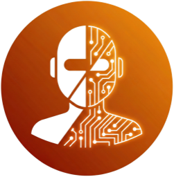

스킬·MCP 라이브러리AI ROASTING
/
GitHub ↗
비즈니스 리더를 위한 AI 카탈로그 · 스킬
비즈니스 리더를 위해
비즈니스 리더를 위해
엄선한 AI 스킬.
AI를 일에 쓰려면 두 가지가 필요합니다. 일하는 방법을 가르치는 스킬과, 바깥 자료와 서비스에 연결하는 MCP입니다. 리더가 바로 쓸 수 있는 것만 골랐습니다.
스킬150
AI에게 일하는 방법을 가르칩니다. 예: PPT 만들기, 계약서 검토, 리서치.
리서치 · PPT·디자인 · 영상 · 글쓰기 · 법무 · 커리어 · 마케팅 · 금융 · AI 검색 · AI 팀 설계 · 일 잘하는 법 · AI 비용 절약 · 자동화 · 한국
지금 보는 중
MCP75
AI를 바깥 자료와 서비스에 연결하는 표준 규격입니다. 예: 법제처 법령, 금융감독원 공시, 특허청 특허.
법률·특허 · 금융·투자 · 경제·통계 · 부동산 · 지도·교통 · 검색·리서치 · 생활·여행 · 채용·HR · 영업·CRM · 문서·협업
보러 가기 →
모아 보기
자주 찾는 검색어
구분